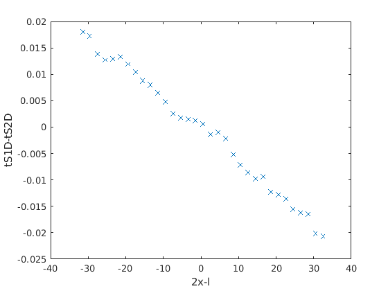

ESCI305 -- Refraction Seismology using Matlab.
Contents
Introduction
Welcome to Refraction Seismology using Matlab. In this lab we will become familiar with the matlab interface, and some simple seismic refraction concepts. The goal of today's lab is to write a script to: i) read and plot seismic refraction data, ii) pick the travel times for the first arrivals, and iii) calculate the depth to basement using the dipping-planar method and the plus-minus method.
For many of you this will be one of the first coding environments you have been exposed to. I'd like to encourage you not to be intimidated. Matlab is well documented and extensive help is available both from official matlab sources and a large and active user community.
To start with let's open matlab. Locate the matlab icon and start it up. Once it has opened find the command window. This is where you can start to play. You can create variables (numbers, data, names etc.) and manipulate them using matlab commands (also known as functions).
Getting Help
Note that at any time you can type 'doc' at the command line (without the quotation marks) to open the html help pages. If you type 'doc' and then the name of a command the help for that command will appear. Similarly type 'help' and a command name and text based help will appear in the command window.
The Command Line
All of the commands you see can be typed at the command window for instant results. However, it is easiest to build a script in which all definitions and commands can be executed sequentially in one go. This way you also save your work as you go.
Writing Scripts
You'll want to create scripts that contain all the workings for this lab. To do this you'll need to type or copy the commands below into your script and run it. You could run all the commands from the Matlab command window, but writing a script is a better way to keep track of what you have done, and allows you to repeat the task easily.
To create a script go to the file menu > new > script, or type 'edit' at the command prompt. Name your script yourname_lab1.m (for instance I would save my script as 'huwhorgan_lab1.m'. Save your work your network drive in a folder named ESCI305_SeismicLab (you will need to create this folder).
When writing a script it is important to include lots of comments. Matlab will ignore any text on a line after the '%' symbol (again without the quotation marks). Everything else will be interpreted either as a command or as an assignment (the creation of a variable). We use the '%' symbol to insert comments telling us and others what we are doing.
In order to execute your script you will need to first save it and then run it. There is a toggle key to do this, which looks like a play button or the F5 key should be the shortcut. Scripts need to be run from the same directory they are stored in. Matlab will prompt you to do this or you can use the cd command to change your working directory.
Seismic Refraction Analysis
Let's jump straight in and load some real data. Here we will load a seismic shot record. We will pick some time distance pairs and analyse the results. You will need to make sure that the files str1m.sgy strm1u.sgy strm1d.sgy are in the same directory as your script. Alternatively you can change the path to the location of the file.
Pay attention to how we are defining variables. Some are scalars (one number), some a vectors (a column or row or data) and some are matrices. (Actually, they are all matrices, but scalars and vectors are special types.)
First let's define if we want to pick data (we do to start) and which shot we want to work with (we only need str1u and str1d).
%------------------------------------------------------------------------- % Some details about the lab here % Your name here % pickingFlag = 0; % CHANGE THIS TO 1 if you want to pick data. %------------------------------------------------------------------------- infile = 'str1u2021'; % Change this to see different shots: str1u2021 str1d2021 %------------------------------------------------------------------------- plusminusFlag = 1; % Change this once you have your picks and are ready %-------------------------------------------------------------------------
Here we define shot locations so we can calculate offsets
switch infile case 'str1u2021' shotloc = 100.00; case 'str1d2021' shotloc = 148.50; otherwise disp('File unknown! Check infile parameter') end
We now define our geophone spacing, sampling interval and record length Note we are using every second geophone to save you having to pick twice as many.
xint = 1; % Geophone spacing tint = 0.0005; % sampling interval recordLength = 0.300; t=0:tint:recordLength; %0:sampleInterval:recordLength ntraces = 48; channels=1:1:ntraces; A = SegYFileReader(strcat('./',infile,'.sgy')); % Get trace headers [traces,th] = readTraceData(A); % Get data
Plotting our shot records
figure, wiggle(t,channels,traces) xlabel('Channel Trace') ylabel('Time (s)')
Interactive Picking
Now we will use an interactive picking tool on your figure. Pick the first arrivals. Select the same part of the waveform on each channel.
Select all traces or press return to quit. Close the figure to continue.
This part of the script converts our picks to offset and time and saves them to a file for later use.
if pickingFlag == 1 figh = gcf; disp('Pick the first breaks. Pick them all, or press enter to continue.') [x,y]=ginputc(ntraces); waitfor(figh) channel = round(x); switch infile case 'str1u2021' upx = (100 +(channel*xint)) -shotloc; upt = y; dat = [channel, upx, upt]; save('./upshotpicks.mat','dat') case 'str1d2021' downx = (100 +(channel*xint)) -shotloc; downt = y; dat = [channelPicked,downx, downt]; save('./downshotpicks.mat','dat') otherwise disp('Unknown shot') end end
This is the end of our data reading, picking and saving. From now on we assume the data has been picked and saved. Go back to the start of the script and set pickingFLag = 0. This tells Matlab not to expect any more click data and we can go straight into plotting out picks and fitting a line of best fit - this will give us the velocity of each layer and the intercept time.
if pickingFlag ~= 1 switch infile case 'str1u2021' load('./upshotpicks.mat'); case 'str1d2021' load('./downshotpicks.mat'); otherwise disp('Unknown input file. Check file exists') end end
Plotting time-distance picks
Now let's plot our time-distance picks Recall that we can determine our velocities and layer thickness from the gradients of this plot, and the t_i time from the intercept
[channel,I] = sort(dat(:,1));
offset = dat(I,2);
time = dat(I,3);
figure, plot(offset,time,'x')
WRITEUP: Two layer Planar Solution
Now let's calculate our best fit. You'll want to change which part of the time and distance vectors you use to calculate your gradients. This will allow you to separate v1 and v2.
By doing this and keeping track of the results you will be able to quickly obtain the results you need for the 2-layer planar solution.
Change these values to examine different parts of the plot. These numbers refer to the offset of each geophone channel in the plot. Your goal is to decide which channel range will be plotted to solve for the velocity of direct arrivals and which channel range will be used to solve for the velocity of the refracted arrivals. Your goal is to obtain estimates of v1 and v2 from each end of the profile. Also keep track of your intercept times.
start = 1; stop = 8; [P,S] = polyfit(offset(start:stop),time(start:stop),1); gcf; hold on plot(offset(start:stop),polyval(P,offset(start:stop)),'-') xlabel('Offset') ylabel('Time') title(infile) assignin('base','P',P)
check the variable v by entering "v" into the command window. This gives us the calculated velocity based on the line you have plotted
v = 1/abs(P(1));
Enter "ti" into the command window to check the time intercept
ti = P(2); sprintf('v estimate %4.0f m/s',v) sprintf('ti estimate is %4.4f seconds',ti)
ans =
'v estimate 428 m/s'
ans =
'ti estimate is 0.0067 seconds'
Now assuming dipping planar layers use the velocities and intercept times you have calculated above to estimate the dip of the interface and the depth at either end of the profile.
For this you will need v1, v2 in the updip and downdip directions, and the intercept times for the v2 layer in both directions.
(Refer K&B Sec. 5.2.4)
WRITEUP: Plus-Minus Method
Recall that for the plus-minus method we need to know the reciprocal time (ts1s2) and we need to know the times to each receiver from each end shot. Remember that we only use the data between cross-over distances.
So, first run the above script on both 'str1u' and 'str1d'. If you do this properly you should create time-distance files upshotpicks.mat and downshotpicks.mat.
Start a new script to calculate the thickness along the profile, or set the pickingFlag=0 and the plusminusFlag=0 at the start of your script and use the same script.
Reloading your picks
First load the picks you have already made and sort them into increasing channel number.
if plusminusFlag == 1
up = load('./upshotpicks.mat'); down = load('./downshotpicks.mat'); [~,Iup] = sort(up.dat(:,1)); [~,Idown] = sort(down.dat(:,1)); for m=1:size(up.dat,2) up.dat(:,m) = up.dat(Iup,m); down.dat(:,m) = down.dat(Idown,m); end %v=500 figure, plot(up.dat(Iup,1),up.dat(Iup,3),'rx') hold on, plot(down.dat(Idown,1),down.dat(Idown,3),'bx') legend('Up','Down','location','best') xlim([0.5,48.5]) % Assumes shot locations were half a geophone spacing offset. grid on
Use your knowledge of the plus-minus method to calculate the depth to basement along the entire profile.
channelon = 8; % This is where you specify what part of the profile to use. channeloff = 40; l = 48.5; % s1-s2 distance x = abs(down.dat(channelon:channeloff,2)); ts1s2 = 0.05; % Check this is correct for your picks minusterm = up.dat(channelon:channeloff,3) -down.dat(channelon:channeloff,3); plusterm = 0.5*(up.dat(channelon:channeloff,3) +down.dat(channelon:channeloff,3) -ts1s2); % Let's plot the minus terms - what does this tell us? Include a comment on % this in your report. figure, plot((2*x)-l,minusterm,'x') p=polyfit((2*x)-l,minusterm,1); v2 = 1/abs(p(1)); xlabel('2x-l') ylabel('tS1D-tS2D')
The Plus-Minus depth
v = 430; % Average of Angela's v1up and v1down z = (plusterm*v*v2)./((v2^2 -v^2)^0.5); % Now plot the resulting depth along the profile, along with the dipping % planar solution you obtained earlier. % Plotting plus minus results and overlaying planar horizontal results figure, plot(offset(channelon:channeloff),-z) grid on hold on planaroffsets = [min(offset),max(offset)]; planardepths = [-4,-3]; plot(planaroffsets,planardepths,'--')
end
WRITEUP: Report
For the writeup present the two Polo Grounds labs (this lab, and the field acquisition lab) as a single report. Write the report in the style of a geotechnical survey that is looking for the depth to the consolidated rock below the park for the purpose of placing foundations in the bedrock.
Your report should briefly describe your aim, your methodology, and findings. The report should be ~5 pages. Include the solution for the dipping-planar layer and the Plus-Minus Method. Provide a conclusion regarding how deep the foundations will have to be.